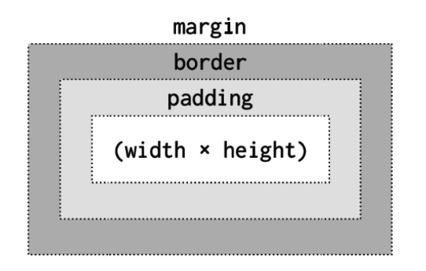

CSS Concepts
January 15, 2016
The past couple of weeks I have learned a lot about HTML and CSS. I even was able to create and style this blog!
One concept that I initially had difficulty with is the CSS box model. I soon realized that this box model consisting of the margin, border, and padding, is extremely important to the styling of elements on the webpage!
Basically, each HTML element can be considered a box. The CSS box model represents each element. The content is surrounded by some padding, a border, and a margin.
The image above shows that the HTML content has a width and height that can be adjusted in CSS. The padding, border, and margin are all added in addition to the original width and height.
- Border - The border separates the edge of one box from another. Every box has a border, it just might not be visible or specified.
- Padding - Padding is the space between the border of a box and any content contained within it.
- Margin - The margin is the space outside the border. It can be used to create gaps between the borders of adjacent boxes.
Adjusting the margin, border, and padding will ultimately control the appearance and layout of the box. The padding and margin properties are useful in adding space between various items on the page and making them more readable.
For each of the properties, you have the option of adjusting the top, right, bottom, or left dimension. Additionally, the size of each can be determined by pixels (px), ems, or percentages. A nice shorthand for this is
padding: 10px 5px 3px 2pxThis changes the size of the padding-top, right, bottom, and left respectively. This same shorthand can also be used for adjusting the margins.
Overall, I found out this week that margins and padding are very powerful tools when thinking about the layout of a webpage.